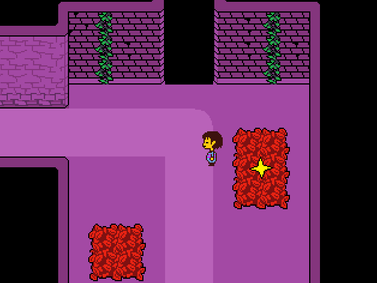
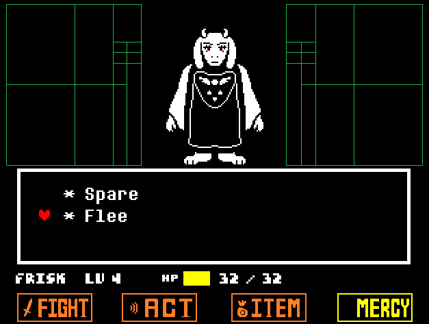
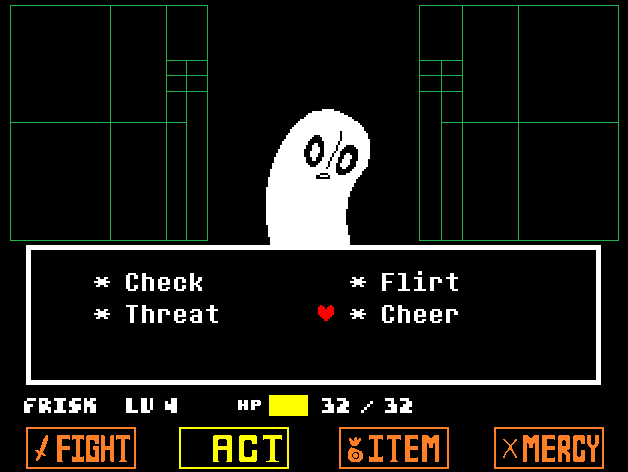
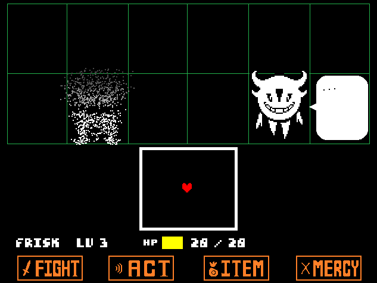
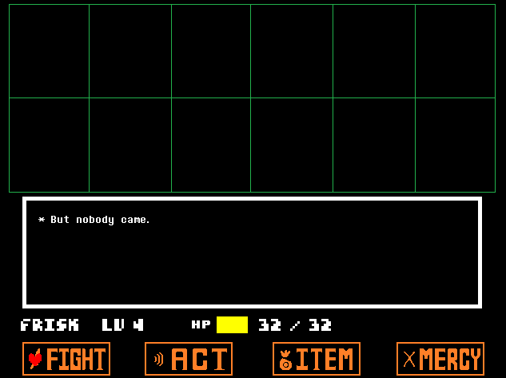
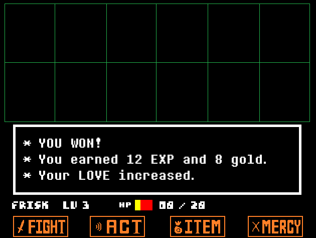

Welcome to this spoiler-free Undertale all routes guide. Undertale routes are the 3 different endings that you get depending on how you interact with the monsters you encounter. This unique mechanic is one of the main reasons it made the list of 5 Must-Try Video Games. If you are wondering how long Undertale is, each of the routes will take about 4 to 6 hours of gameplay.
The Neutral Route

If you don't deliberately focus on sparing every single enemy or killing everyone, you will land on the Neutral ending. This is the most common and recommended route for new players, because it is required to unlock the "real" ending of the game.
There are various small differences in the exact ending you get depending on which characters live or die and which optional events you trigger. So long as you kill at least one monster and spare at least one, you will guarantee getting a Neutral route.
The Pacifist Route – Spare Everyone

This is considered by many as the "real" ending and a hard route to complete because you cannot kill any enemy — even the bosses. Because you can't get any EXP, your LOVE will never increase, meaning you will not have a lot of health to spare in your fights. This is why you should always try to maximize the "ACT" button in encounters so you can spare enemies, allowing you to get gold for healing items.

The thing to keep in mind is to look for clues from dialogues during encounters, and try to understand the enemy you are fighting. For example, dogs want to be pet, so try to find a way to pet them. Speaking of dialogues, simply sparing or fleeing is not enough to get the actual Pacifist run — doing only that will get you the Neutral ending we talked about earlier. A true Pacifist route requires you to finish the missions given by the bosses you spare.
The Genocide Route – Kill Everyone

The exact opposite of Pacifist, this route requires you to eliminate every monster in every area, turning them all to dust. Before facing an area's main boss, you must meet a kill quota through random encounters, in addition to taking down every combatant NPC you meet. This route is significantly harder and takes more time than the other two, for narrative reasons.
Kill Quota Per Area Before Bosses and NPC Names
- Ruins: 20 kills
- Snowdin: 16 kills (plus Snowdrake, Lesser Dog, Doggo, Dogamy & Dogaressa, Greater Dog)
- Waterfall: 18 kills (plus Shyren, Glad Dummy, Mad Dummy)
- Hotland / CORE: 40 kills combined (plus Royal Guards)

Now you won't need to keep track of every kill you have — the game will tell you if you've exhausted all enemies in the area by showing a "but nobody came" dialogue during an encounter. Do keep in mind that the more kills you have in each area, the rarer random encounters become, so when grinding, try to find a save point and walk back-and-forth to speed up the process.
Recommended Play Order
- Neutral run: let your natural choices guide you, as this is also required before you can get the True Pacifist ending.
- Complete a True Pacifist run: go back and follow every character's whole storyline to unlock the complete narrative.
- Attempt Genocide last: only attempt this path after seeing True Pacifist, so you can get the proper experience of the game.
One Last Thing

Undertale remembers what you do across saves in ways that aren't obvious on the first playthrough. Certain characters and endings react differently based on actions you took in previous runs on the same machine. This is why it is highly recommended to do the Genocide route last, if at all. For more on the game's world and characters outside of this guide, the official Undertale site is a good place to look.